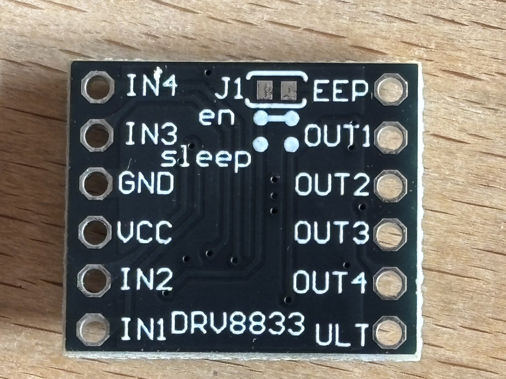

D2
DRV8833 dual H-bridge motor driver module
untested×5New-bought stock, a small breakout carrying a chip marked V8833 / 82K / CV25
(a DRV8833, partly obscured by the photo angle) — a dual H-bridge motor driver, tiny
enough to sit right next to a gearmotor rather than on a central driver board like the
MD22 (D1).
- Board 18.5 × 16 mm; ships with two loose 6-pin header strips — solder before use.
- VCC 3–10 V. Unlike the MD22 there's no separate logic supply: VCC powers both the logic and the motor outputs (the DRV8833 doesn't need a separate low-voltage rail).
- Two independent H-bridges, 1.5 A per channel:
OUT1/OUT2driven byIN1/IN2,OUT3/OUT4driven byIN3/IN4— can drive two DC motors, or one stepper in bipolar mode across both bridges. - Protections per the datasheet/listing: overcurrent, short-circuit, undervoltage lockout, and overheat, all "YES" — good, since these will likely get driven from a bench supply before anything else.
- Logic inputs take the Pi's 3.3 V directly: VIH 2 V on the
INpins (2.5 V on the sleep pin), rated to 5.75 V recommended / 7 V absolute max. Every input has an internal pulldown (150 kΩ; 500 kΩ on sleep), so a floating input reads as off. ULTandEEPread like clipped silkscreen — (FA)ULT= nFAULT, (SL)EEP= nSLEEP — which is the opposite of the seller's listing (ULT= sleep select,EEP= "output protection"). Two things favour the clipped reading: theen/sleepjumpers sit againstEEP, and the front side carries a473(47 kΩ) resistor, exactly the 20–75 kΩ nSLEEP pullup TI asks for (datasheet §7.3.4). Unresolved until metered; it doesn't block a first build, since neither pin needs a wire.- The
ensolder jumper is bridged from the factory andsleepis open (back-side photo below), which is what leaves the chip awake with nothing connected toEEP/ULT.J1, a 2-pad SMD footprint next toEEP, is unpopulated. - Because the sleep pin is tied to the rail by that bridged jumper, keep
VCCat or below 6.5 V until the tie is traced: the pin clamps internally at 6.5 V and more than 250 µA into that clamp damages it. A 47 kΩ pullup would be safe to the full 10.8 V; a hard 0 Ω tie would not. - No current-sense resistors on the board, so xISEN is grounded and the chip's PWM current chopping is unused — the only limit is overcurrent protection at 2–3.3 A, which the M2 motors (0.2 A stall) never reach.
- Pin labels are silkscreened on the face opposite the IC, so the pinout is hidden once the board is mounted component-side up. Note the orientation before soldering the headers.
- Full 12-pin layout, as silkscreened (two 6-pin rows, top to bottom):
IN4/EEP,IN3/OUT1,GND/OUT2,VCC/OUT3,IN2/OUT4,IN1/ULT. - Good fit for the M2 N20 gearmotors (6 V, ~0.2 A stall — well inside the 1.5 A/channel rating and the 3–10 V supply window). Not a fit for the M1 Canon motors — 22 V is well over this board's 10 V max; the MD22 stays the driver for those.
Wiring plan for the robot-car prototype — pin-by-pin to the C1 Pi Zero 2 W
and the M2 motors, power tree, control logic, bring-up order — is in
cad/robot_car/WIRING.md.
To verify:
- Solder the header strips
- Confirm VCC range and that it really does double as the motor supply before wiring a battery
- Settle
EEPvsULT: unpowered, measure each toVCC. The sleep pin reads ~47 kΩ (good) or ~0 Ω (hard tie, cap VCC at 6.5 V); nFAULT reads open - Measure
IN1–IN4toGNDunpowered — expect ~150 kΩ internal pulldown on each - Confirm the bridged
enjumper really does leave the chip awake: 6 V on VCC, one motor onOUT1/OUT2, jumperIN1high — it should run with nothing onEEP/ULT - Check whether the green front-side part is a power LED (it should light when VCC comes up)
- Bench-test each H-bridge independently against an M2 motor before trusting both channels at once


{kind=link}

en
jumper bridged, sleep open, J1 unpopulated.